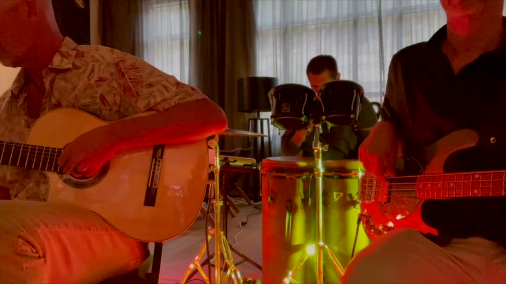
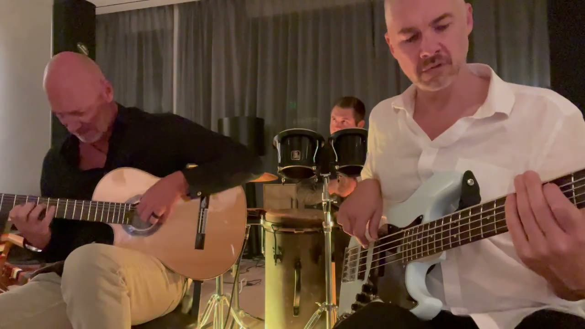

Video Clips
Video clips of our bands and musicians.
Every clip is grouped by act. If you see something you like, check out the act's page or just reach out with your date.
Acoustic covers, sung
Singer and Guitarist

Blues, roots, jazz and Spanish flavors
Solo Guitarist


Jazz standards
Jazz Duo

Christmas jazz
Christmas Jazz Trio

Solo violin to string quartet
Classical Strings
 String quartet for a gala or a wedding: Beethoven's Op. 18 No. 6, first two movements14:39Solo violin for a wedding ceremony: the Andante from Bach's Sonata No. 23:55
String quartet for a gala or a wedding: Beethoven's Op. 18 No. 6, first two movements14:39Solo violin for a wedding ceremony: the Andante from Bach's Sonata No. 23:55 Solo violin: Paganini's Caprice No. 193:08
Solo violin: Paganini's Caprice No. 193:08 Solo violin: the Allegro from Bach's Sonata No. 23:06
Solo violin: the Allegro from Bach's Sonata No. 23:06 Violin: the first movement of the Sibelius Violin Concerto13:28
Violin: the first movement of the Sibelius Violin Concerto13:28Singer-songwriter covers
Tejas Singh
 Tejas Singh: A Life of Crime4:53Tejas Singh live: acoustic singer and guitarist for private parties and weddings13:05
Tejas Singh: A Life of Crime4:53Tejas Singh live: acoustic singer and guitarist for private parties and weddings13:05 Acoustic singer-songwriter for a wedding cocktail hour: Tejas Singh, Thirty Days4:09
Acoustic singer-songwriter for a wedding cocktail hour: Tejas Singh, Thirty Days4:09 Live band for a holiday party: Tejas Singh quartet1:55
Live band for a holiday party: Tejas Singh quartet1:55 Singer and guitarist for a private party: Tejas Singh live-looping No Woman No Cry2:12
Singer and guitarist for a private party: Tejas Singh live-looping No Woman No Cry2:12Flamenco
Dirty Flamenco

Dirty Flamenco, live: an earlier night0:53 Flamenco guitar for a cocktail hour: tangos, Dirty Flamenco0:39
Flamenco guitar for a cocktail hour: tangos, Dirty Flamenco0:39 Flamenco guitar for a garden party: Bart's rumba, Dirty Flamenco1:33
Flamenco guitar for a garden party: Bart's rumba, Dirty Flamenco1:33 Flamenco trio for a private party: rumba, Dirty Flamenco1:31
Flamenco trio for a private party: rumba, Dirty Flamenco1:31 Spanish guitar for a dinner party: farruca, Dirty Flamenco3:49
Spanish guitar for a dinner party: farruca, Dirty Flamenco3:49 Spanish guitar for a private party: the Sabicas verdiales0:48
Spanish guitar for a private party: the Sabicas verdiales0:48 Spanish guitar for a wedding ceremony: Can't Help Falling in Love2:40
Spanish guitar for a wedding ceremony: Can't Help Falling in Love2:40 Spanish guitar for a wedding ceremony: Malaguena, Dirty Flamenco2:02
Spanish guitar for a wedding ceremony: Malaguena, Dirty Flamenco2:02 Three Spanish guitars for a corporate event: Entre dos Aguas0:34
Three Spanish guitars for a corporate event: Entre dos Aguas0:34
Dirty Flamenco, live1:05Blues, rock and roots
Tony Medina
 Tony Medina as a duo: Going Down, the Freddie King standard5:16
Tony Medina as a duo: Going Down, the Freddie King standard5:16 Tony Medina as a duo: Don't Drink the Water, a Dave Matthews Band cover6:33
Tony Medina as a duo: Don't Drink the Water, a Dave Matthews Band cover6:33 Blues guitar for a private party: The Thrill Is Gone, Tony Medina2:41
Blues guitar for a private party: The Thrill Is Gone, Tony Medina2:41 Classic rock covers for an office party: Drive, Tony Medina4:24
Classic rock covers for an office party: Drive, Tony Medina4:24 Singer and guitarist for welcome drinks: Tony Medina, Headline5:20Tony Medina live: blues and rock voice and guitar for private events in Denver7:13
Singer and guitarist for welcome drinks: Tony Medina, Headline5:20Tony Medina live: blues and rock voice and guitar for private events in Denver7:13Original singer-songwriter
René Moffatt
 René Moffatt acoustic: If You Were Near4:06
René Moffatt acoustic: If You Were Near4:06 René Moffatt covers Blackbird by The Beatles2:34
René Moffatt covers Blackbird by The Beatles2:34 René Moffatt covers Willie Nelson: Mammas Don't Let Your Babies Grow Up To Be Cowboys3:46
René Moffatt covers Willie Nelson: Mammas Don't Let Your Babies Grow Up To Be Cowboys3:46 René Moffatt as a trio: Heirloom Winnebago3:37
René Moffatt as a trio: Heirloom Winnebago3:37 René Moffatt and his band live: Stuck Inside2:51René Moffatt live: an original singer-songwriter on voice and acoustic guitar, for private events in Denver4:40
René Moffatt and his band live: Stuck Inside2:51René Moffatt live: an original singer-songwriter on voice and acoustic guitar, for private events in Denver4:40 René Moffatt solo at a listening venue: Standing In The Shadow Of The Moon3:30
René Moffatt solo at a listening venue: Standing In The Shadow Of The Moon3:30 René Moffatt live: Goodnight, Texas4:45
René Moffatt live: Goodnight, Texas4:45 René Moffatt and his band live: Calendar Year5:53
René Moffatt and his band live: Calendar Year5:53 René Moffatt & The Moonshadows at the Underground Music Showcase: Calendar Year6:02
René Moffatt & The Moonshadows at the Underground Music Showcase: Calendar Year6:02 René Moffatt & The Moonshadows at the Underground Music Showcase: Come Of Age2:43
René Moffatt & The Moonshadows at the Underground Music Showcase: Come Of Age2:43 René Moffatt & The Moonshadows at the Underground Music Showcase: Drive, a Cars cover3:46
René Moffatt & The Moonshadows at the Underground Music Showcase: Drive, a Cars cover3:46 René Moffatt & The Moonshadows at the Underground Music Showcase: Goodnight, Texas4:33
René Moffatt & The Moonshadows at the Underground Music Showcase: Goodnight, Texas4:33 René Moffatt & The Moonshadows at the Underground Music Showcase: Halfway Home3:30
René Moffatt & The Moonshadows at the Underground Music Showcase: Halfway Home3:30 René Moffatt & The Moonshadows at the Underground Music Showcase: Iron Gates Of Love4:30
René Moffatt & The Moonshadows at the Underground Music Showcase: Iron Gates Of Love4:30 René Moffatt & The Moonshadows at the Underground Music Showcase: Stuck Inside4:22
René Moffatt & The Moonshadows at the Underground Music Showcase: Stuck Inside4:22 René Moffatt & The Moonshadows at the Underground Music Showcase: Waterfall5:34
René Moffatt & The Moonshadows at the Underground Music Showcase: Waterfall5:34 René Moffatt & The Moonshadows at the Underground Music Showcase: What If I, What If You5:03
René Moffatt & The Moonshadows at the Underground Music Showcase: What If I, What If You5:03